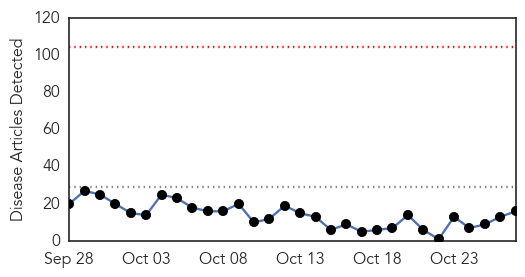
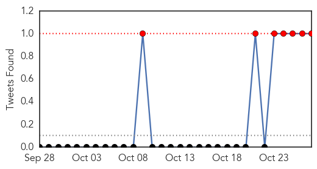

Dengue Fever
30-Day Web Trend
0 alerts, 0 warnings

30-Day Twitter Trend
7 alerts, 0 warnings

Article Locations
Article Confidences

Top Articles:
- 0.992
- PAHO calls for increased vigilance due to Zika mosquito virus. CPS advises populace to eliminate mosquito breeding areas.
- 0.984
- Science, Technology and Medicine News Updates From Asia
- 0.961
- Aggressive New Mosquitoes that Carry Deadly Diseases are Spreading Through California - Story
- 0.909
- Dengue outbreak showed up government failure on health, sanitation frontsMangalorean.com
- 0.866
- Dominican Republic News
- 0.866
- Qaim orders inquiry against usage of expired fumigates for dengue control - Pakistan
- 0.860
- Protein target to prevent dengue transmission identified
- 0.819
- WHO Reacts To Pakistan, Afghanistan Quake
- 0.777
- CM irked by authorities’ failure to curb dengue cases
- 0.716
- Climate deal more important for your health than you realise-WHO
- 0.700
- 2,639 dengue cases reported in city this year, CM told
- 0.684
- Climate deal more important for your health than you realise
- 0.677
- Pakistan: Qaim orders inquiry against usage of expired fumigates for dengue control
- 0.650
- UN ramps up to assist those in Afghanistan and Pakistan affected by massive earthquake
- 0.602
- Climate deal more important for your health than you realise-WHO
- 0.583
- san jose
Top Tweets:
- 0.806
- Flavivirus news: Health department investigating possible cases of dengue fever on Hawaii Islan... https://t.co/jmLC06E2gl pathogenposse
Meningitis
30-Day Web Trend
0 alerts, 0 warnings

30-Day Twitter Trend
5 alerts, 0 warnings

Article Locations

Article Confidences

Top Articles:
Top Tweets:
-
No tweets found for Oct 27, 2015